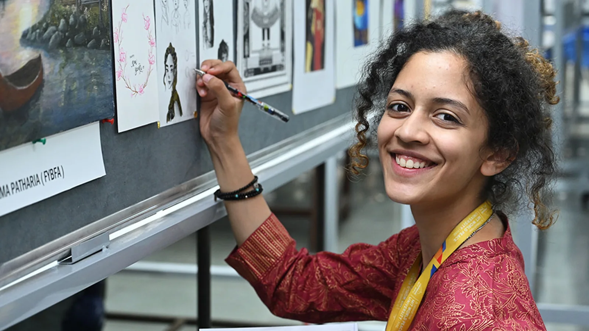
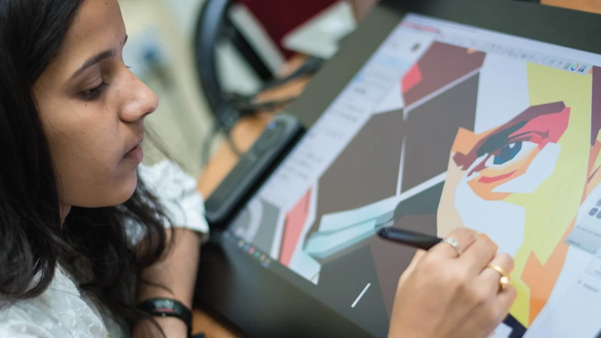

Prof. Suman Devadula
Professor & Dean


The curricula are designed to create a balance between theoretical and practical learning. Students work on interdisciplinary projects that will combine science, technology and design to tackle real life problems.
The School has professional equipment and software to aid in teaching. The School provides various workshops, seminars along with rural and national immersion for hands-on learning.
Professor & Dean
The Department of Design at MIT-WPU stands as a premier design institution in India, offering a spectrum of undergraduate and postgraduate programmes designed to equip students for diverse careers. The…
The Department of Visual Arts at MIT-MIT-WPU School of Design offers a compelling array of undergraduate and postgraduate programmes meticulously tailored for aspiring creatives eager to establish their…